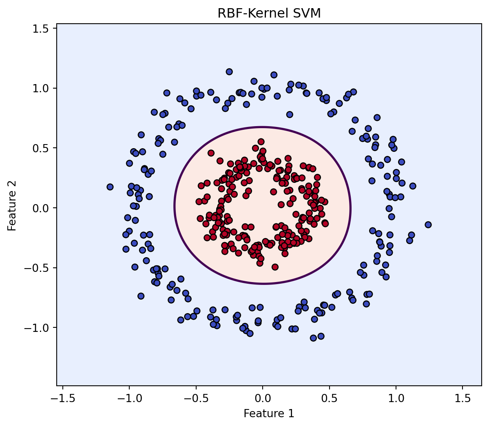
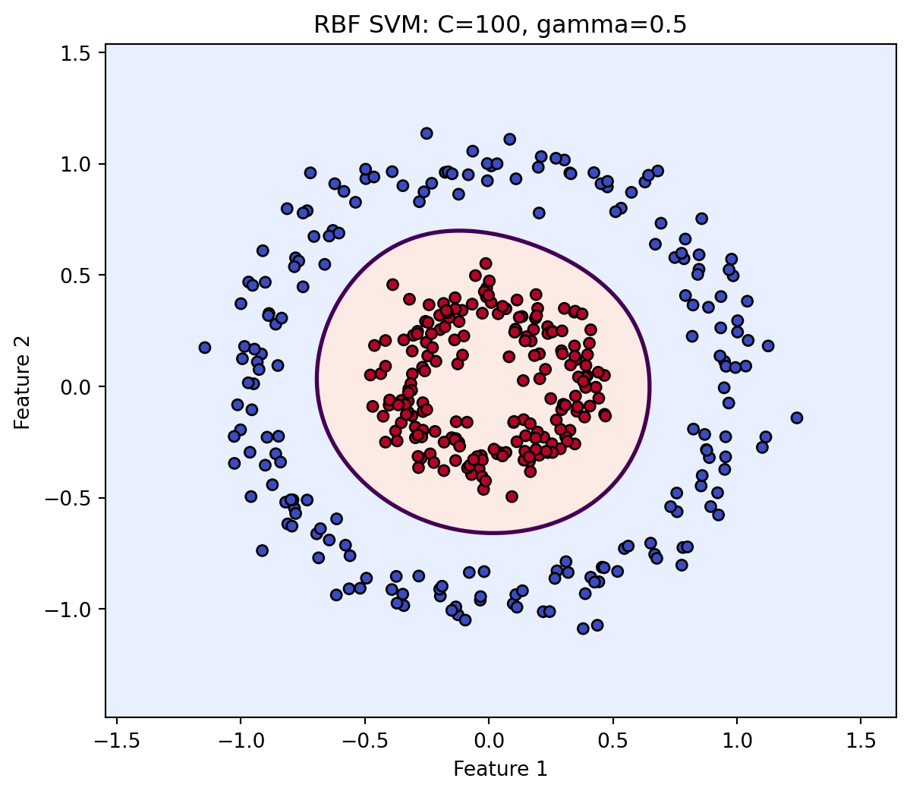
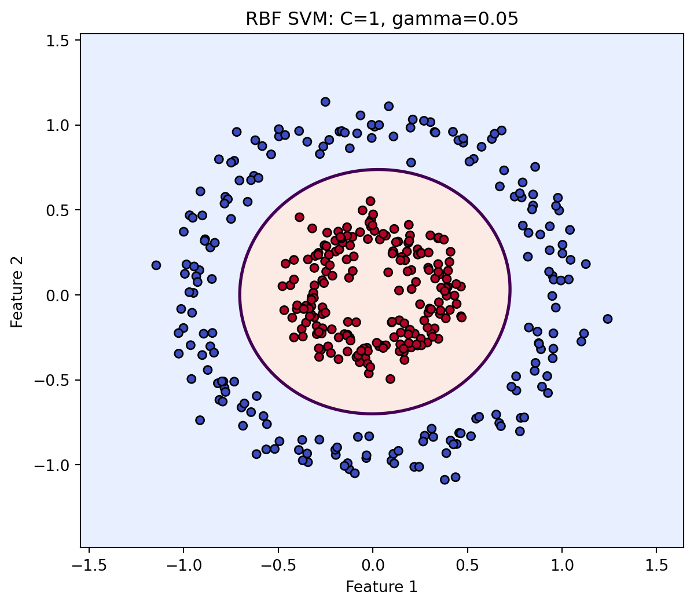
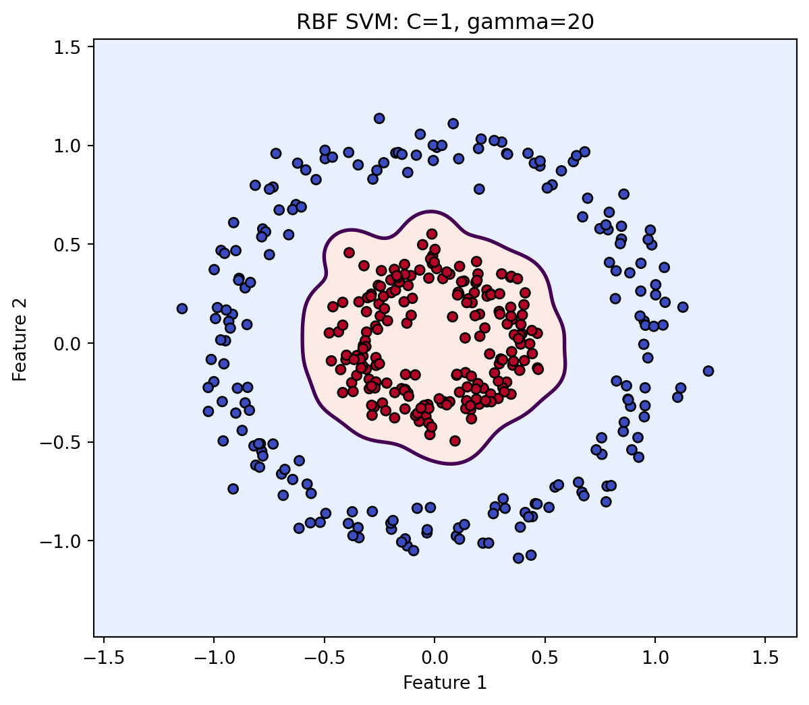

9Support Vector Machines: Margins, Geometry, and Kernels
9.1 Learning Objectives
By the end of this chapter, you should be able to:
express a linear decision boundary as a hyperplane;
explain why the margin matters in support vector classification;
identify support vectors and explain their special role;
distinguish hard-margin and soft-margin classification;
interpret slack variables and the regularization parameter \(C\);
explain hinge loss conceptually and mathematically;
explain why feature scaling is especially important for SVMs;
fit linear and nonlinear SVM classifiers with leakage-safe pipelines;
explain the kernel trick without explicitly constructing every transformed feature;
distinguish linear, polynomial, and radial basis function kernels;
interpret the role of \(\gamma\) in an RBF kernel;
visualize nonlinear decision boundaries;
compare SVMs with logistic regression and tree-based models;
explain why probability estimates from an SVM require additional modeling;
apply SVM reasoning to classification and regression problems;
distinguish geometric separability from scientific explanation.
evaluate an RBF-kernel SVM as a classical computer-vision baseline.
9.2 Why This Matters
Earlier chapters introduced two very different ways of learning.
Linear and logistic regression estimate weighted combinations of features. Decision trees recursively partition the feature space.
Support Vector Machines (SVMs) introduce a third perspective:
Find a boundary that separates observations while maximizing geometric separation from the nearest cases.
The observations closest to the boundary become especially important. These are the support vectors.
Even more strikingly, when a straight boundary is inadequate, kernels allow us to solve a nonlinear problem by working with similarities corresponding to a richer feature space.
ImportantCentral Question
What if the difficulty of a classification problem depends not only on the algorithm, but on the geometry of the space in which we represent it?
9.3 Classification as Geometry
For two features, a linear decision boundary can be written
\[
w_1x_1+w_2x_2+b=0.
\]
More generally,
\[
w^\top x+b=0.
\]
The vector \(w\) determines the orientation of the hyperplane, while \(b\) shifts its location.
A classifier may use the sign of
\[
f(x)=w^\top x+b
\]
to assign classes.
For labels \(y_i\in\{-1,+1\}\),
\[
\hat y_i=\operatorname{sign}(w^\top x_i+b).
\]
9.4 Many Boundaries Can Separate the Same Data
Suppose a dataset is linearly separable. There may be many hyperplanes that classify every training observation correctly.
Which one should we choose?
SVMs prefer a boundary with a large margin: a wide region between the classes and the decision boundary.
For the canonical SVM scaling, the two supporting hyperplanes are
\[
w^\top x+b=1
\]
and
\[
w^\top x+b=-1.
\]
The distance between them is
\[
\frac{2}{\|w\|}.
\]
Maximizing the margin is therefore equivalent to minimizing \(\|w\|\).
9.5 Hard-Margin SVM
Support-vector machines formalize classification around maximum-margin separation, with the canonical support-vector network formulation developed by Cortes and Vapnik (Cortes and Vapnik 1995).
For perfectly separable data, the optimization can be written
\[
\min_{w,b}\frac{1}{2}\|w\|^2
\]
subject to
\[
y_i(w^\top x_i+b)\ge 1
\qquad
\text{for all }i.
\]
This demands perfect separation with the required margin.
Real datasets rarely behave so politely.
9.6 Support Vectors
The observations nearest the separating boundary determine the margin.
These observations are the support vectors.
Moving a distant observation slightly may not change the fitted boundary at all. Moving a support vector may change it substantially.
This is one of the most distinctive ideas in SVMs:
Not every training observation plays an equal geometric role in defining the final boundary.
Notice that ROC-AUC can use the decision scores. We do not need calibrated probabilities merely to evaluate ranking.
9.12 The Decision Function Is Not a Probability
An SVM naturally produces a signed decision score:
\[
f(x)=w^\top x+b
\]
for the linear case.
The sign indicates the predicted side of the boundary, while magnitude relates to geometric position relative to the boundary under the model.
But
\[
f(x)=2.1
\]
does not mean a 210% probability or a 0.21 probability.
If probability estimates are requested from SVC, additional probability estimation is performed and adds computational cost (scikit-learn developers 2026).
WarningScore ≠ Probability
Do not interpret decision_function() output as a probability.
When calibrated probabilities are required for decisions, evaluate their calibration explicitly.
9.13 When a Straight Boundary Is Not Enough
Consider a dataset in which one class forms an inner region and another surrounds it.
No straight line can separate the classes well in the original two-dimensional space.
without requiring us to explicitly construct every transformed coordinate.
This is the kernel trick, a central idea in kernel methods that allows algorithms to operate through inner products in an implicit feature space (Schölkopf and Smola 2002).
It allows a linear separator in a transformed feature space to correspond to a nonlinear boundary in the original feature space.
NoteThe Important Idea
The kernel does not magically make the data “nonlinear.”
It changes the similarity representation used by the algorithm so that a linear solution in the induced feature space can represent nonlinear structure in the original space.
9.16 Representation Can Change the Difficulty of the Problem
A classification problem can appear difficult partly because of the coordinates in which it is expressed.
NoteBeyond the Algorithm: Is Complexity in the World or in the Representation?
A boundary can look complicated in one coordinate system and simple in another.
A model never sees reality directly. It sees a representation.
Part of machine learning is therefore deciding what geometry the model should be allowed to perceive.
ImportantResearch Reality Check
If one kernel strongly outperforms another, do not conclude only that it is “better.” Ask what the result suggests about the geometry and representation of the problem, and whether that advantage persists under resampling and external validation.
9.17 Common Kernels
9.17.1 Linear Kernel
\[
K(x,z)=x^\top z.
\]
Useful when a linear boundary is appropriate, especially in high-dimensional settings.
9.17.2 Polynomial Kernel
\[
K(x,z)
=
(\gamma x^\top z+r)^d.
\]
The degree \(d\) controls polynomial complexity.
9.17.3 Radial Basis Function Kernel
The RBF kernel is
\[
K(x,z)
=
\exp\left(-\gamma\|x-z\|^2\right).
\]
Nearby observations have similarity closer to 1; distant observations have similarity closer to 0.
9.18 Understanding \(\gamma\)
For the RBF kernel, \(\gamma\) controls how rapidly similarity decays with distance.
A small \(\gamma\) gives each observation a broad region of influence and often produces smoother boundaries.
A large \(\gamma\) gives each observation a narrow region of influence and can create highly flexible boundaries.
Conceptually,
\[
\gamma\uparrow
\Rightarrow
\text{more local influence},
\]
(a) A linear kernel cannot represent the circular structure, while an RBF kernel can create a nonlinear decision boundary.

(b)
Figure 9.5
The RBF model does not prove that the underlying scientific mechanism is radial. It demonstrates that this similarity representation can fit the observed decision structure.
(a) C and gamma jointly control the flexibility of an RBF SVM.

(b)

(c)

(d)
Figure 9.6
Do not choose these values by looking at final test performance repeatedly. Hyperparameter selection belongs inside the resampling workflow developed fully in Chapter 16.
9.21 Compare Logistic Regression, Linear SVM, and RBF SVM
A model family should not be selected because it sounds more sophisticated. It should earn its complexity through appropriate validation and practical usefulness.
9.22 Computer Vision Learning Experience: An RBF SVM on Handwritten Digits
Support Vector Machines have a natural connection to computer vision because image representations can be high dimensional and class boundaries can be nonlinear.
We can revisit the handwritten-digits workload with an RBF-kernel SVM.
If the RBF SVM outperforms logistic regression, the evidence supports a difference in predictive performance under this benchmark and validation design.
It does not prove that the RBF representation captures the “true” geometry of handwritten digits.
9.23 Computational Considerations
Kernel SVMs can become computationally demanding as the number of observations grows because training depends on relationships among training cases.
For large datasets, alternatives may include:
linear SVM formulations;
stochastic optimization;
approximate kernel methods;
tree ensembles;
neural networks;
other scalable estimators.
The right model depends on dimensionality, sample size, sparsity, deployment requirements, and validation evidence.
9.24 SVM for Regression
Support Vector Regression (SVR) extends margin-based reasoning to continuous outcomes.
Instead of demanding that predictions match every observation exactly, SVR can use an \(\epsilon\)-insensitive region.
Conceptually, errors within an \(\epsilon\)-tube are not penalized:
The values above are demonstrations, not tuned recommendations.
9.25 Three Tracks
9.25.1 Health Track
An SVM might classify a health outcome using many correlated measurements or high-dimensional features. Scaling, calibration, external validation, subgroup performance, and clinical action remain more important than the sophistication of the kernel.
9.25.2 Education Track
An SVM may identify complex boundaries among academic, engagement, and institutional features. A nonlinear boundary can improve prediction without yielding an easily interpretable explanation of why a student experiences an outcome.
9.25.3 Open ML Benchmark Track
Benchmark datasets allow controlled experiments with class overlap, nonlinear geometry, scaling, \(C\), \(\gamma\), kernels, and support-vector counts.
This track is especially useful for understanding algorithmic geometry.
9.26 Beyond the Algorithm: Change the Representation, Change the Problem
NoteA Problem Can Look Different in Another Space
Two classes may appear hopelessly intertwined in the variables we initially observe.
A transformation may reveal structure.
This raises a broader intellectual question:
When we say a problem is difficult, are we describing the phenomenon—or our current representation of it?
Machine learning repeatedly teaches us that representation matters.
A useful coordinate system can make a complex pattern simple. A poor representation can make a simple phenomenon look complicated.
But representation also changes interpretation.
A high-dimensional kernel space may improve prediction while making the learned reasoning harder to explain in substantive terms.
So the goal is not:
“Transform until the model wins.”
The deeper goal is:
Choose representations that improve useful generalization while remaining defensible for the scientific or operational purpose.
The geometry we choose influences the patterns the algorithm is capable of seeing.
9.27 AI Pair Programmer: The Kernel Made It True
Ask an AI assistant to interpret an RBF SVM that substantially outperforms logistic regression.
Give it this claim:
“Because the RBF SVM has higher test AUC, the true relationship between the predictors and outcome must be nonlinear and the RBF kernel has discovered the underlying mechanism.”
Audit the response.
A strong critique should distinguish:
predictive performance from mechanism;
nonlinear predictive structure from causal structure;
kernel representation from scientific theory;
one test sample from external validity;
hyperparameter selection from final evaluation;
discrimination from calibration.
9.28 Hands-On Lab: From Hyperplane to Kernel
Using a classification dataset:
complete the Problem Framing Canvas;
complete the Feature Ledger;
establish a baseline;
fit logistic regression;
fit a linear SVM inside a scaling pipeline;
compare held-out discrimination;
inspect the number of support vectors;
fit an RBF SVM;
examine several \(C\) and \(\gamma\) combinations using training/resampling data;
compare linear and nonlinear decision behavior;
evaluate whether probabilities are actually needed;
if probabilities are used, inspect calibration;
compare SVM results with the tree/forest results from Chapter 8;
document computational cost;
state what the model cannot establish scientifically.
9.29 Practitioner Track
A practitioner should be able to build scaling-safe SVM pipelines, choose between linear and kernel formulations, understand \(C\) and \(\gamma\), evaluate decision scores, and recognize computational constraints.
9.30 Researcher Track
A researcher should additionally justify the representation, separate predictive geometry from scientific mechanism, validate hyperparameters without test contamination, evaluate calibration when probabilities matter, and examine generalization across relevant populations.
9.31 Research Studio
Design a study in which SVMs are plausible because of high dimensionality or nonlinear structure.
Specify:
research or operational problem;
target and prediction time;
baseline;
feature representation;
reason scaling matters;
linear SVM;
candidate kernel;
\(C\) and \(\gamma\) search strategy;
validation design;
discrimination metric;
calibration requirement;
computational constraints;
comparison model;
interpretive limitations;
potential scholarly contribution.
9.32 Professor’s Challenge: The Perfect Kernel
A research team tries 40 combinations of \(C\) and \(\gamma\) on the test set. They select the combination with the highest test AUC and report that AUC as final performance.
They then write:
“The RBF SVM significantly outperformed logistic regression, proving that the true data-generating process is nonlinear. The most difficult observations are the support vectors, which represent the most scientifically important cases.”
Critique:
test-set tuning;
optimistic performance estimation;
the meaning of “significantly”;
nonlinear prediction versus data-generating mechanism;
support vectors versus scientific importance;
scaling;
calibration;
uncertainty;
external validation;
computational reproducibility.
Redesign the experiment using nested or otherwise properly separated model selection and final evaluation.
9.33 Knowledge Check
What is a hyperplane?
What is the SVM margin?
Why does minimizing \(\|w\|\) relate to maximizing margin?
What are support vectors?
Why is hard-margin classification often unrealistic?
What do slack variables represent?
What does \(C\) control?
What is hinge loss?
Why does feature scaling matter for SVMs?
Why is an SVM decision score not automatically a probability?
What is a feature map?
What does a kernel compute?
What is the kernel trick?
How does the RBF kernel use distance?
What does \(\gamma\) control?
Why can large \(\gamma\) create highly flexible boundaries?
What is SVR’s \(\epsilon\)-insensitive idea?
Why does better RBF performance not prove the true scientific mechanism is nonlinear?
How can nonlinear transformation simplify a classification problem?
What does a kernel compute conceptually?
Why is kernel choice a representational assumption?
How do kernels bridge classical feature engineering and neural representation learning?
9.34 Reproducibility Check
Record:
problem specification;
feature ledger;
preprocessing/scaling pipeline;
split and resampling design;
baseline;
kernel;
\(C\);
\(\gamma\) where applicable;
polynomial degree where applicable;
class weighting if used;
probability-estimation method if used;
calibration assessment;
support-vector counts;
evaluation metrics;
computational environment;
random seeds where applicable;
package versions;
all model-selection boundaries;
code generating every result.
9.35 Key Takeaways
SVMs frame classification as a geometric separation problem.
The maximum-margin principle favors boundaries separated from nearby observations.
Support vectors play a special role in defining the boundary.
Soft margins balance margin width against violations.
\(C\) controls the strength of the penalty for violations.
Hinge loss penalizes observations that fail to achieve sufficient signed margin.
Scaling is essential because SVM geometry depends on feature representation.
Kernels allow nonlinear decision boundaries through implicit feature-space similarities.
\(\gamma\) controls the locality of RBF influence.
Decision scores are not automatically probabilities.
Kernel SVMs can be computationally expensive on large datasets.
SVR extends margin-based reasoning to continuous outcomes.
Better nonlinear prediction does not establish a nonlinear causal mechanism.
Changing the representation can change the apparent difficulty of a problem.
Problem difficulty depends partly on representation.
Kernels define similarity in implicit feature spaces.
Kernel choice expresses an assumption about geometry.
Kernel methods provide a bridge to learned representations.
Schölkopf, Bernhard, and Alexander J. Smola. 2002. Learning with Kernels: Support Vector Machines, Regularization, Optimization, and Beyond. Cambridge, MA: MIT Press.